분홍빛 구름과 노을빛이 어두운 하늘까지 물들이는 모습에서 다음의 밝은 순간을 떠올렸다.

하늘·손·길의 이미지가 밝고 희망차 보여서 선택했다.
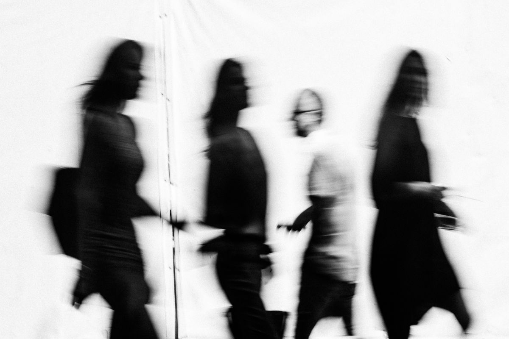
하늘의 빛, 손의 움직임, 멀리 이어지는 길에서 밝고 희망찬 순간을 찾았다.
분홍빛 구름과 노을빛이 어두운 하늘까지 물들이는 모습에서 다음의 밝은 순간을 떠올렸다.
하늘·손·길의 이미지가 밝고 희망차 보여서 선택했다.
빛을 향해 뻗고, 꽃을 품고, 서로 닿으려는 손에서 따뜻한 희망을 느꼈다.
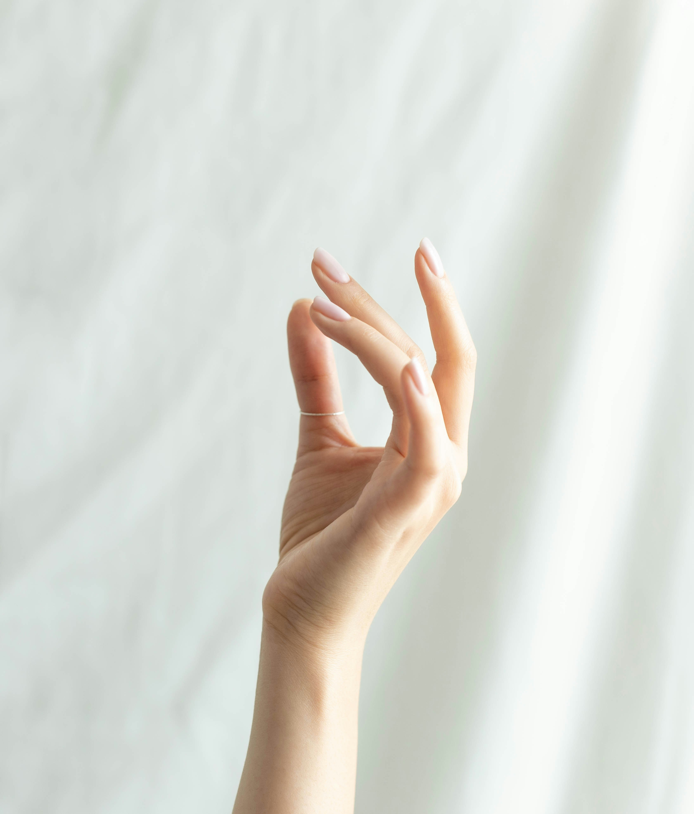
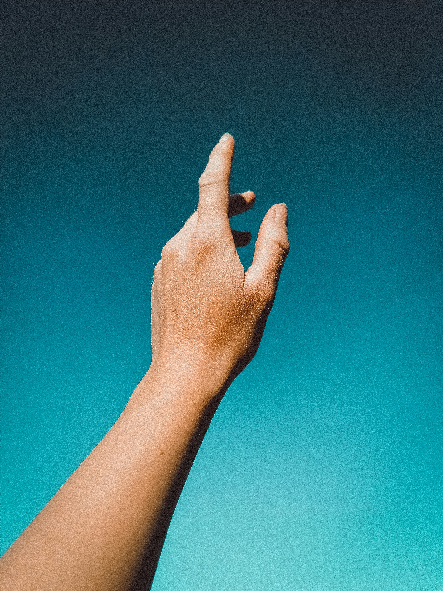
하늘·손·길의 이미지가 밝고 희망차 보여서 선택했다.
도시와 숲, 사막의 길이 멀리 이어지는 모습에서 앞으로 나아갈 수 있다는 느낌을 받았다.
하늘·손·길의 이미지가 밝고 희망차 보여서 선택했다.
기술을 일상으로 만들어 사람들의 생활 방식을 변화시킨 스티브 잡스를 좋아하며,
기술과 인문학을 연결해 창의성을 넓히는 그의 태도를 닮고 싶다.
컴퓨터를 사고 능력을 확장하는 도구로 설명함
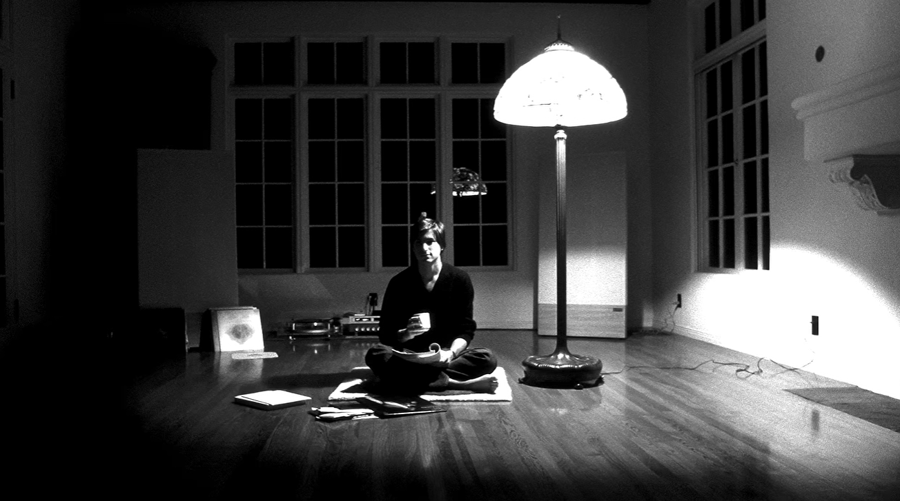
기술을 누구나 활용하는 일상으로 바꾼 점이 좋다.
음악·전화·인터넷 기능을 결합한 아이폰을 소개함
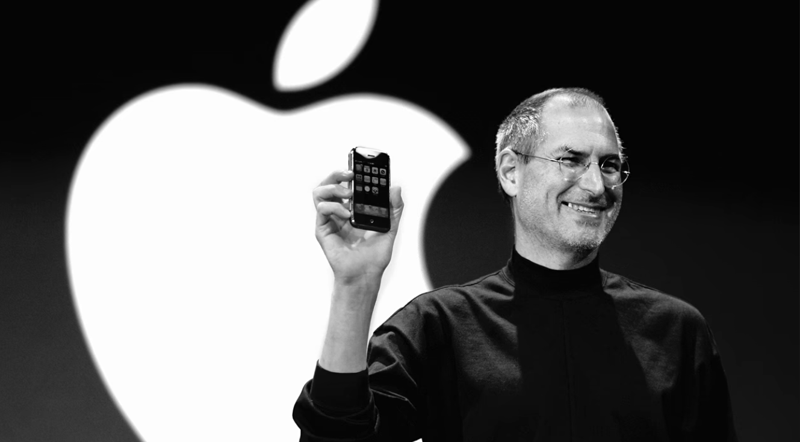
사람들의 생활 방식을 바꾼 점에 끌린다.
사람의 창의성을 높이는 제품을 이야기함
휴식을 취하고 싶어서
몸이 지치고 쉬고 싶을때 가장 오래 머물고 싶어
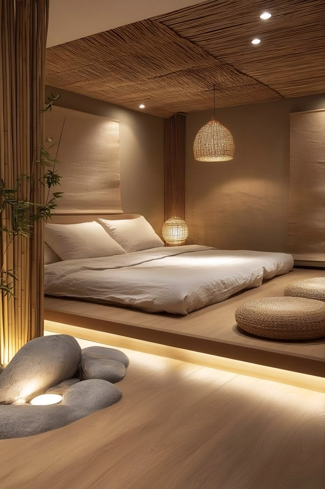
지친몸과 마음을 달랠수있는 휴식공간에서 휴식을 취하고 싶어서
휴식을 취하고 싶어서
일을 하다가 잠깐의 휴식을 취하고 싶을떄
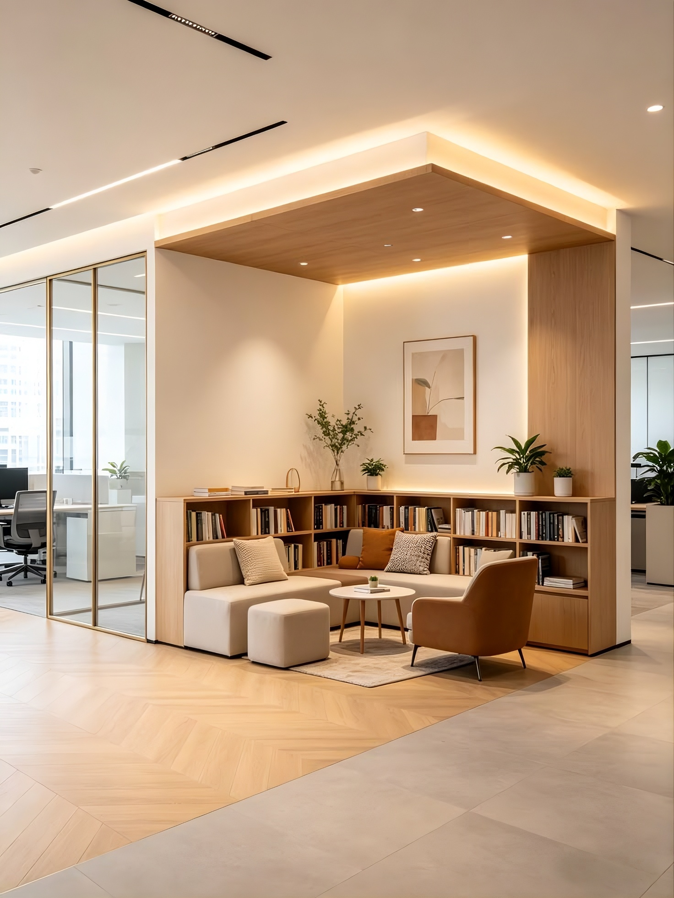
지친몸과 마음을 달랠수있는 휴식공간에서 휴식을 취하고 싶어서
휴식을 취하고 싶어서
온전히 나의 나의 시간을 갖고 고요한 적막속에서 쉬고 싶을때
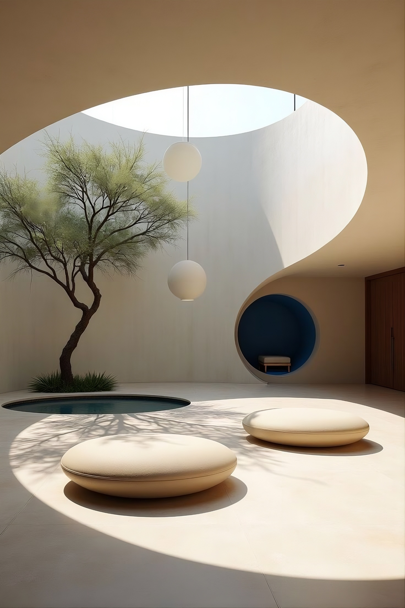
지친몸과 마음을 달랠수있는 휴식공간에서 휴식을 취하고 싶어서
집에서 밖으로 나설 때 챙겨 사용한다
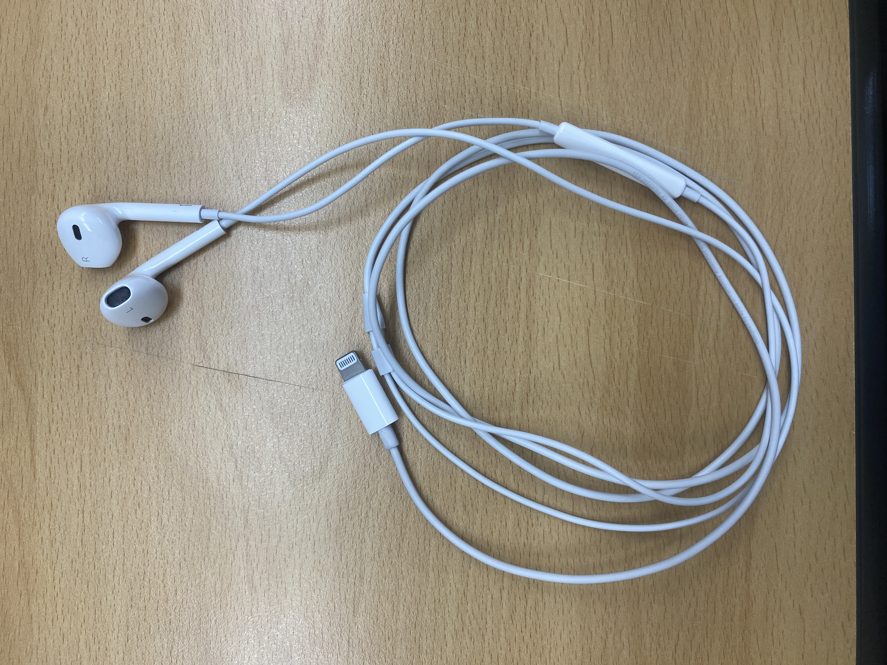
편하고 익숙해서
핸드폰의 베터리가 부족할때 사용한다
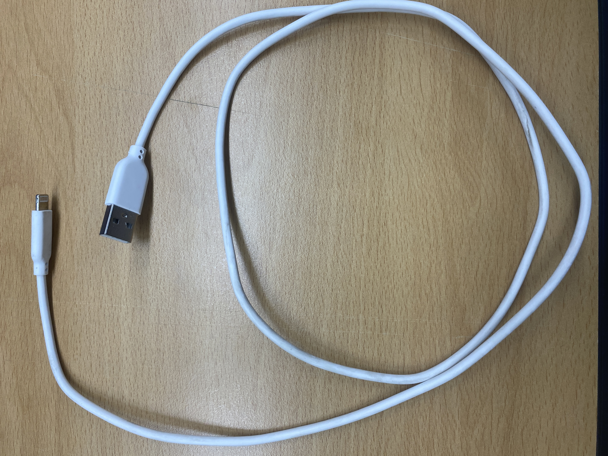
라이트닝 케이블을 써야되서
라이트닝 케이블과 함꼐 사용한다
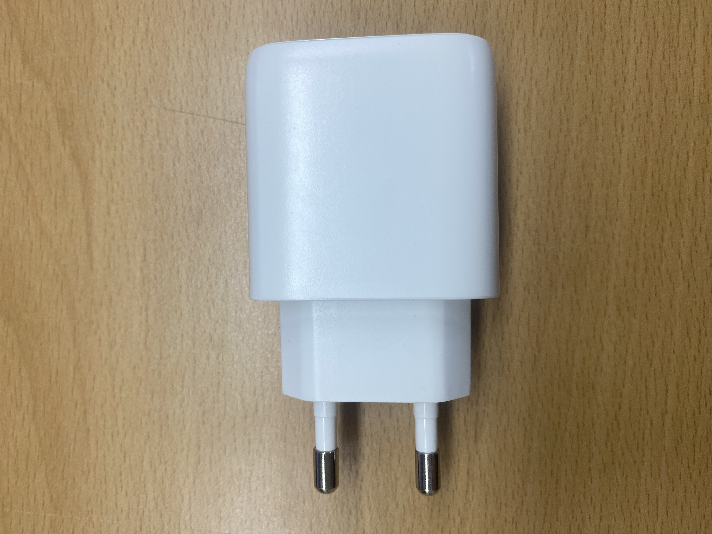
익숙해서
연필을 사용하고 지울때 사용한다
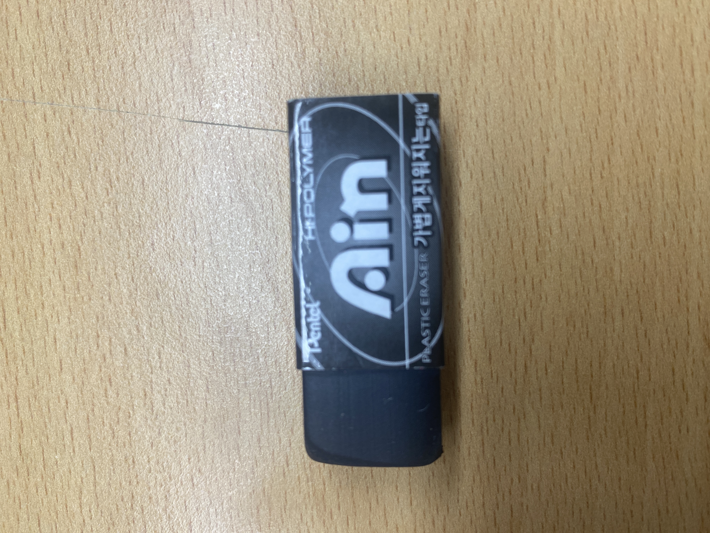
가볍고 잘지워지고 편해서
카드를 꺼내 카드를 사용할때 사용한다
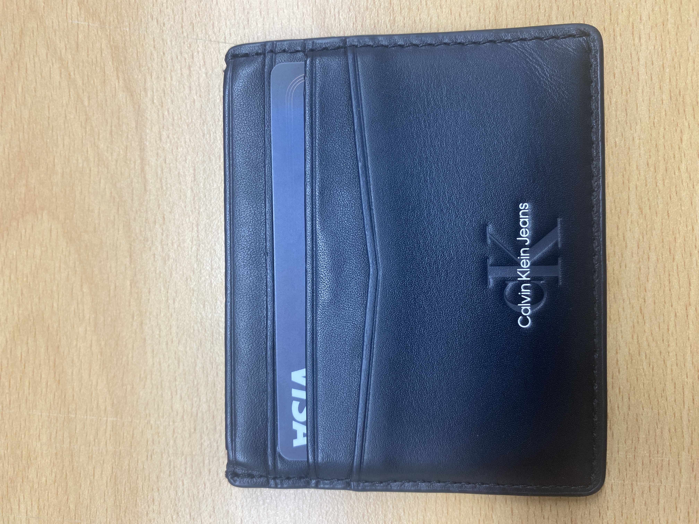
편해서